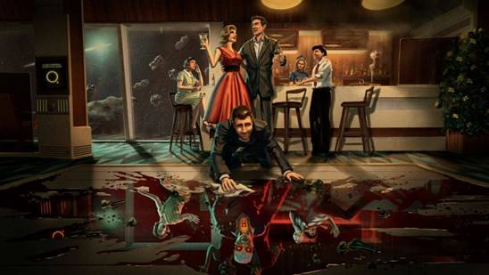
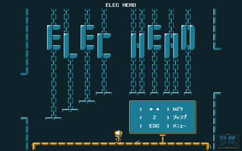

SENSE OF WONDER NIGHT(SOWN)

SOWN2020入围作品出炉！
“SENSE OF WONDER NIGHT 2020 （SOWN2020）”活动将从独立游戏“待评参展商”的80部作品中选出卓尔不凡的佳作。今年共有8部作品杀出重围。分别是日本2部，印度尼西亚、波兰、英国、秘鲁、瑞士、加拿大各1部，入围阵容充满国际色彩。各入围作品将在9月25日（周五）17时00分～19时00分举办的“SENSE OF WONDER NIGHT 2020 （SOWN2020）”活动中进行演示。“Grand Audience Award”、“Best Game Design Award”等各个奖项的获奖名单由评选委员审查确定。SOWN2020活动实况将在线上发布，敬请广大观众观赏！
-
-
Barnaque（加拿大）
《Infini》

角色设计新奇巧妙，让人情不自禁地沉浸在游戏的世界里
号称迷幻解谜型AVG的本作品凭借晦涩的世界观、新奇的角色和出色的音效让一众评选委员大为惊叹。“这部作品将奇迹感体现得淋漓尽致，它的图像和音效可为玩家带来顶级的冲击力。很想了解创作者的创作初衷。”（评选委员・吉田修平）
https://tgs-online.eventos.tokyo/web/portal/309/event/1214/module/booth/33324/21506
-
-
-
Calappa Games（日本）
《螃蟹大战–Fight Crab-》

一部关节活动真实到令人惊叹的“螃蟹格斗动作”游戏
这是一款很单纯的格斗游戏，玩家操纵甲壳动物打倒对方便会获得胜利，但同时，每只螃蟹的动作都会真实到令人叹为观止。“还原螃蟹关节的动作真的是太难了。能感受到游戏对新技术的从容驾驭，趣味性很强。”（评选委员・北山功）
https://tgs-online.eventos.tokyo/web/portal/309/event/1214/module/booth/33324/21469
-
-
-
fluckyMachine（波兰）
《Trash Sailors》

一部支持多人联机游戏、在手绘帆船上展开的海洋冒险动作游戏
在游戏中，玩家需要搭建帆船，与敌人作战时，除了必要的攻防之外，还必须在战斗期间完成破损部位的修复，否则帆船将会沉没，整个游戏充满着危险的气息。支持多人联机游戏，玩家可与伙伴们一起合力抗敌，感受加倍的快乐。“在多人联机模式下，与伙伴们一起边思考边游戏，真的很有趣。想快点玩起来。”（评选委员・高桥建滋）
https://tgs-online.eventos.tokyo/web/portal/309/event/1214/module/booth/33324/21513
-
-
-
Invisible Walls（丹麦）
《First Class Trouble》
 一部揪出混在人类中的人工智能机器人的3D冒险游戏
到底谁在说谎？聚集在某一特定空间内的人类需要一步步找出混在其间的人工智能机器人。玩家需要思考，如果自己是人工智能机器人，将会如何蒙混过关等等，一场惊心动魄的多人联机版谋略大战将在3D空间内展开。“市面上有不少《人狼》类的数字游戏，但3D空间内的多人参与玩法还是会给人以新鲜之感。”（评选委员・小林信重）
https://tgs-online.eventos.tokyo/web/portal/309/event/1214/module/booth/33324/21457
-
-
-
Leap Game Studios and Hermanos Magia（秘鲁）
《Arrog》

一部充满神秘视觉效果和世界观的解谜冒险游戏
游戏特色在于加入了大量秘鲁神话传说元素，氛围十分独特。别致而又新颖的世界观获得了评选委员的高度评价。“在游戏这一新型媒介中采用本国神话等题材的做法，在我们看来也十分新颖。这是一部方方面面都让人心潮澎湃的作品。”（评选委员・新清士）
https://tgs-online.eventos.tokyo/web/portal/309/event/1214/module/booth/33324/21529
-
-
-
生高桥（日本）
《ElecHead》
 操控电能开拓前路的崭新解谜型AVG
游戏中的机器人会为接触到的物体通电，玩家操控机器人进行跳跃、移动、开启机关，内容简约而又富有深意。“这款游戏在技术方面并没有新的突破，但‘接触到的物体会通电并移动’这一着眼点十分精准。它是一个绝佳的范例，为我们展现了如何运用简约的单一创意做出一款趣味度较高的游戏。”（评选委员・北山功）
https://tgs-online.eventos.tokyo/web/portal/309/event/1214/module/booth/33324/21500
-
-
-
Stray Fawn Studio（瑞士）
《Nimbatus – The Space Drone Constructor》

一部能组建无人机还能学编程的太空探险游戏
在这部游戏中，玩家将亲手组建、操控无人机，并进行编程，使无人机自动运行。“这部游戏还可以作为编程入门工具来使用，十分具有教育意义。”（小林信重）。“这部游戏还可以这样玩：组建出外形精致的无人机并进行编程，再把它展示给小伙伴看。”（评选委员・北山功）
https://tgs-online.eventos.tokyo/web/portal/309/event/1214/module/booth/33324/21489
-
-
-
Toge Productions（印度尼西亚）
《A Space for the Unbound》

像素画里的印度尼西亚原始风景让人顿生怀旧感慨
眼前明明是一片印度尼西亚风景，却同样能让日本人产生莫名的怀旧之感。这款冒险游戏拥有精美的像素画，并采用了横向滚屏模式。“首先来说，图像十分精美，故事线也会令日本人勾起美好的旧日回忆。我非常喜欢游戏里的这一点。”（评选委员・驹形一宪）
https://tgs-online.eventos.tokyo/web/portal/309/event/1214/module/booth/33324/21498
-
什么是“SOWN2020入围作品”？
在索尼互动娱乐（SIE）和任天堂的倾情赞助下，今年继续有80家独立游戏开发商以“待评参展商”的身份参展。SOWN评选委员将从这些公司的80部作品中选出与“SENSE OF WONDER NIGHT（SOWN）”办展宗旨相符的8部作品（SOWN2020入围作品），在9月18日（周五）的东京电玩展2020线上展会中发布入围名单。SOWN2020入围作品将在9月25日（周五）17时00分举办的发布会上进行作品演示，优秀作品将获得“Grand Audience Award"等奖项。
“SENSE OF WONDER NIGHT 2020 （SOWN2020）”播放日程
举办时间：2020年9月25日（周五） 17时00分-19时00分（预计）
活动费用：免费
※2020年9月25日（周五）17:00-19:00播出期间，请点击上述链接按钮进行观看。
独立夜派对
“独立夜派对”是一场线上交流会，活动目的在于加深独立游戏开发商、SENSE OF WONDER NIGHT（SOWN）的Finalist、SOWN审查员以及赞助企业之间的友好关系，预计举办时间为9月25日（周五）19时30分。
-
举办时间
-
2020年9月25日（周五） 19时30分-（预计21时30分结束）
-
参加资格
-
业务匹配系统（线上洽谈系统）注册者
※未注册的参展商可免费注册。详情请咨询贵司参展负责人。
※普通业务参与者可付费注册业务匹配系统。请按以下按钮进入注册申请页面。
-
参加方法
-
事务局将在会期前以邮件形式向各位业务匹配系统注册者发送派对邀请函。
详情参见独立夜派对页面。
什么是SENSE OF WONDER NIGHT（SOWN）
“SENSE OF WONDER NIGHT 2020（SOWN2020）”这项企划旨在发掘“让每一个人在画面映入眼帘的一瞬间或是听到理念的一瞬间都能惊叹自己的世界受到了触动”、给人带来“SENSE OF WONDER（奇迹感）”的游戏创意，为游戏开发商提供在东京电玩展会场进行演示和展示的机会，今年是第13届活动。
2019年，SOWN对被选为独立游戏区参展商的86个团体和个人进行了评选。最终，来自4个国家和地区的8组Finalist登台进行了作品演示。具体为日本4组，美国2组，中国和波兰各1组。会场内共有约400名与会者。与会者在看到具有独创性的游戏和别具一格的演示时会敲下微笑锤进行回应，现场互动十分热烈。
最终，这些Finalist分获“Grand Audience Award”、“Best Technological Game Award”、“Best Arts Award”、“Best Experimental Game Award”、“Best Game Design Award”、“Best Presentation Award”奖项，活动在一片盛况中落幕。活动结束后，与会者们在＜国际派对＋独立夜＞中进行了愉快的交流。
报名参加SOWN前，首先需要报名成为独立“待评参展”（免费）。评选委员会成员对其进行评选，通过者将获得以“待评参展”（免费）的身份参展的资格。此后，评选委员会将再次从通过者中选出Finalist登上SOWN的舞台。
“SENSE OF WONDER NIGHT 2020”演示概要
-
举办日期
-
2020年9月25日（周五） 预计时间（17：00-19：00）
-
会场
-
预计在东京都内举办，采用线上直播形式
-
奖金
-
大奖（Grand Audience Award） 3,000 美元
各奖项（Best Game Design Award, 等） 500 美元
当日演示的注意事项
・ 成为登台者的前提条件是以独立“待评参展”的身份参展。
・ 登台者将获得约10分钟的演示时间。请在规定时间内完成游戏的示范与演示。（配有日英同声传译）
・ 身处海外和外地的Finalist将在线上进行演示，或发布事先制作好的演示视频。
・ 演示形式为视频，报名内容（游戏简介）也将在TGS2020 ONLINE上公开。
SOWN的活动目的
● 介绍富有实验性、创造性的游戏设计和创意的游戏
● 介绍“SENSE OF WONDER”在游戏中的重要性，提升游戏产业的活力
● 为开发实验性游戏的游戏人提供走向未来的机遇平台
● 开创全新的游戏设计领域
活动希望看到的是原型演示、已发售或待发售的具有实验性质的游戏、由有着奇思妙想的学生开发的游戏等等。
无论专业人士还是业余爱好者，活动都将一视同仁，同等对待。
同时，活动也欢迎小型创业公司制作的游戏以及单人开发的同人游戏踊跃报名。
如果您准备发布给人带来“SENSE OF WONDER”的游戏，请在报名前确认好报名参加方式。
重要
“SENSE OF WONDER NIGHT”从Game Developers Conference自2001年启动的“Experimental Gameplay Workshop”上获得了大量灵感。谨向推动这一研讨会走向成功的各位相关人士和朋友表示衷心的感谢。
SOWN向外界广泛征集符合以下五项要求中任一项的游戏！
● 介绍富有实验性、创造性的游戏设计和创意的游戏
塑造让人耳目一新的全新游戏体验的游戏
游戏中完美融入自然语言处理、物理运算、图像识别、手势控制等全新技术，为玩家提供新式体验
颠覆游戏传统常识的游戏
不断探索游戏自身全新表达方式的游戏，通过游戏体验，让玩家的世界发生些许的改变
带有创发性元素的游戏
游戏引入人工智能交互，配以工具性元素及社交性等元素，让玩家在活动中产生极强的游戏代入感
让大量观众心动难耐的游戏
游戏的全新体验让每一名观众都想亲身体验，不由得立刻想把它带回家
让人从直觉上感到震撼的游戏
第一眼便给人以强烈震撼的游戏
哪些游戏不属于SOWN评选的对象
以未必与游戏本身存在关联的元素为核心的游戏
游戏以崭新的背景设定、情境、角色设计、图像、故事线、音效等游戏构成元素之一为核心创新点
已有的游戏类型或单纯由已有的游戏类型混杂而成的新类型
但真正塑造出全新游戏体验的此类游戏则不在此限
仅仅新颖在面向特定顾客群体这一点上
如仅面向女性或仅面向老年人的游戏等。但广大群体均可从游戏中获得感触的游戏则不在此限
不影响游戏玩法的纯技术性创新、实验性商业模式、流通机制
活动并不完全排斥这一类创新，但需要其对游戏体验产生直接明了的显著影响
评选委员
由以下“SENSE OF WONDER NIGHT”评选委员进行评选。
-
-
游戏记者
新清士
株式会社Thirdverse董事长，曾开发VR剑术游戏《泰坦之剑》。数字好莱坞大学研究生院副教授。Tokyo XR Startups董事。著有《VR商务强势来袭 “虚拟世界”将催生巨大市场》（NHK出版）。
-

-
Gametapas
Founder
Juan Gril
20年来设计并制作了多款获赞无数的大众市场游戏。现为Gametapas的创设者。曾创立休闲游戏工作室Joju Games并大获成功。12年来，与大型传媒公司、游戏出版商双方联手，开发过50多款PC、主机、移动平台游戏。90年代后半期，在他还是Yahoo！Games前团队成员的时候，便开启了自己的这段职业生涯。
-

-
东北学院大学
小林信重
国际游戏开发者协会日本（IGDA日本）同人与独立游戏分会（SIG-INDIE）正式负责人。在论文《自主制作文化——游戏产业发展的关键所在》（全文在网上公开）中，他从社会科学的角度出发，对日本的游戏自主制作及游戏产业中存在的相关课题与解决对策进行了分析，并由此获得东京工业大学学术博士学位。2020年6月，由其编著的《数字游戏研究入门》（MINERVA书房）一书出版。专攻媒体研究和文化社会学。
-

-
神奈川电子技术研究所 [同人俱乐部] 俱乐部代表、游戏策划、程序
北山功
2002年成立神奈川电子技术研究所。2010年在SOWN上演示《我要做森林世界之神》，2012年起成为SOWN评选委员成员。作品包括《QUALIA》、《时间为我所停》、《AGARTHA》等20多部游戏。目前仍在运用人工生命、集群智能、细胞自动机等技术创作游戏。
-

-
Videogame Ninja: Trusiga
Ramon Nafria
1992年，12岁的Naeval第一次玩游戏时就发现游戏是表达自我的最佳媒介。自1999年起，Naeval便陆续向Onez、Ociojoven、Anaitgames、Eurogamer、Videoshock and Vandal等各大西班牙媒体投稿，自2003年起，又先后参与了Nerlaska、Gameloft、Digital Legends、Abylight、U Play、Blit Software and A Crowd of Monsters等游戏的制作。目前在多所大学开办了游戏类课程，并以游戏开发协会成员的身份大展才华。
-

-
NPO法人OcuFes
高桥建滋
1998年进入光荣株式会社工作。参与过“真三国无双1-4”等的制作。2008年跳槽到Creatures株式会社，任《口袋妖怪乐园（Poke Park）》总监等职务。2013年，通过Kickstarter购入OculusRift DK1，成立了VR软件开发和VR软件的发布会OfuFes（今Japan VR Fest）。2014年以一名VR专家的身份独立。同年，将OcuFes改制为NPO法人。此后，一直为在日本普及VR、支持全球VR开发人员而不懈努力。
-

-
TSUKUMO 执行董事 营业企划部部长
驹形一宪
将对游戏和娱乐的爱好发展成一项事业，目前正在计划参加游戏类及娱乐行业的展会，并利用初音未来等IP产品开发各类商品。在YouTube播出的“TSUKUMO虚拟购物”节目中，他化身美少女虚拟销售员为大家热情服务。喜欢的游戏类型是2D像素画动作游戏。爱好是玩游戏和看感兴趣的VTuber视频。
-

-
索尼互动娱乐
Indies Initiative 代表
吉田修平
1986年进入索尼株式会社工作，1993年2月参与成立如今的SIE。此后制作了多款面向“PlayStation”平台发售的软件作品，自2008年起任游戏制作部门SIE全球工作室总裁。曾负责《战神》、《神秘海域》各系列的制作。2019年11月，出任推动独立游戏发展的Indies Initiative代表。其人还是2016年10月发售的虚拟现实系统PlayStation®RVR的核心研发成员。